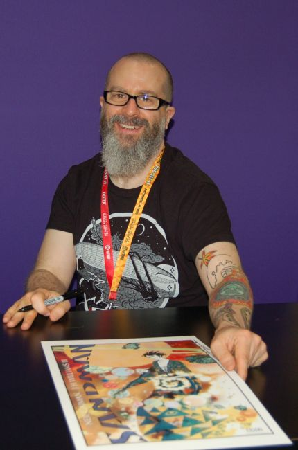

James H. Williams III (born 1965), usually credited as J. H. Williams III, is an American comics artist and penciller. He is known for his work on titles such as:
Chase
Promethea
Desolation Jones
Batwoman
The Sandman: Overture
Interior work
Hero Alliance Quarterly #2–3 (with Robert M. Ingersoll, Innovation, 1991–1992)
Demonic Toys #1–4 (with Doug Campbell, Eternity, 1992)
The Twilight Zone #4 (with Chuck Dixon, NOW, 1992)
Blood Syndicate #9, 15 (with Ivan Velez Jr., Milestone, 1993–1994)
Empires of Night #1 (with Michael House, Rebel Studios, 1993)
Showcase '93 #12: "The Colour of Courage" (with Brian Augustyn, DC Comics, 1993)
Raw Media Mags #4: "Empires of Night: Epilogue-Prologue" (with Michael House, Rebel Studios, 1994)
Deathwish #1–4 (with Adam Blaustein, Milestone, 1994)
Guy Gardner: Warrior #26, 32 (with Beau Smith, DC Comics, 1994)
Judge Dredd #5–10, 12 (with Andrew Helfer, Michael Avon Oeming and Dev Madan, DC Comics, 1994–1995)
Wolverine Annual '95: "Lair of the N'Garai" (with Larry Hama, Marvel, 1995)
Underworld Unleashed: Abyss — Hell's Sentinel (with Scott Peterson, one-shot, DC Comics, 1995)
Batman (DC Comics, 1996–2007):
"Constant Whitewater" (with Doug Moench, in #526, 1996)
"The Screams of the Green Dragon" (with Doug Moench, in Annual #21, 1997)
"Chasing Clay" (with Doug Moench and Kelley Jones, in #550, 1998)
"Suit of Evil Souls" (with Doug Moench and Kelley Jones, in #551, 1998)
"The Island of Mister Mayhew" (with Grant Morrison, in #667–669, 2007)
Batman: Legends of the Dark Knight (DC Comics, 1996–2005):
"Conspiracy" (with Doug Moench, in #86–88, 1996)
"Snow" (with Dan Curtis Johnson and Seth Fisher, in #192–196, 2005)
Green Lantern #80: "Light in Darkness" (with Ron Marz, DC Comics, 1996)
The Flash Annual #9: "Silent Running" (with Peter J. Tomasi, DC Comics, 1996)
The Big Book of the Unexplained: "The Valentich Vanishing" (with Doug Moench, Paradox Press, 1997)
Justice Riders (with Chuck Dixon, one-shot, DC Comics, 1997)
Starman #26, Annual #1 (with James Robinson, DC Comics, 1997)
The Shade #2: "Rupert and Marguerite: 1865 & 1931" (with James Robinson, DC Comics, 1997)
Green Lantern (with James Robinson, one-shot, Tangent, 1997)
Chase #1–9, 1 000 000 (with Dan Curtis Johnson, DC Comics, 1997–1998)
Uncanny X-Men #352: "In Sin Air" (with Steven T. Seagle and various artists, Marvel, 1998)
The Creeper #9: "Mental Block" (with Dan Abnett and Andy Lanning, DC Comics, 1998)
Chronos #1 000 000 (with John Francis Moore, DC Comics, 1998)
Tales of the Green Lantern (with James Robinson, one-shot, Tangent, 1998)
X-Man #46–47 (with Terry Kavanagh, Marvel, 1998–1999)
Son of Superman (with Howard Chaykin and David Tischman, graphic novel, DC Comics, 1999)
Promethea #1–32 (with Alan Moore, America's Best Comics, 1999–2005)
JLA #48: "Truth is Stranger" (with Mark Waid and Bryan Hitch, DC Comics, 2000)
Métal Hurlant #3: "Eucharist Sun" (with Alejandro Jodorowsky and Kirk Anderson, Les Humanoïdes Associés, 2002)
Hellboy: Weird Tales #5: "Love is Scarier than Monsters" (with W. Haden Blackman, Dark Horse, 2003)
DC Comics Presents: Mystery in Space #1: "Crisis on Two Worlds" (with Elliot S! Maggin, DC Comics, 2004)
Wild Girl #1–6 (with Leah Moore, John Mark Reppion and Shawn McManus, Wildstorm, 2005)
Seven Soldiers of Victory #0 and 1 (with Grant Morrison, DC Comics, 2005–2006)
Desolation Jones #1–6 (with Warren Ellis, Wildstorm, 2005–2006)
Detective Comics (DC Comics, 2006–2010):
"The Beautiful People" (with Paul Dini, in #821, 2006)
"Elegy" (with Greg Rucka, in #854–857, 2009)
"Go" (with Greg Rucka, in #858–860, 2009–2010)
Justice League of America #0 (with Brad Meltzer, DC Comics, 2007)
Jonah Hex #35: "A Crude Offer" (with Justin Gray and Jimmy Palmiotti, DC Comics, 2008)
Milestone Forever #1: "Hardware" (with Dwayne McDuffie, Milestone, 2010)
DC Universe: Legacies #2: "Snapshot: Reaction!" (with Len Wein, co-feature, DC Comics, 2010)
Fables #100: "Celebrity Burning Questions" (with Bill Willingham, Vertigo, 2010)
Batwoman #0–24 (with W. Haden Blackman, DC Comics, 2010–2013)
The CBLDF Presents Liberty Annual '11: "It's Not a Trick" (script and art, Image, 2011)
The Sandman: Overture #1–6 (with Neil Gaiman, Vertigo, 2013–2015)
Cover work
Judge Dredd #11 (DC Comics, 1995)
Steel #23 (DC Comics, 1996)
The Flash #127 (DC Comics, 1997)
Chronos #10 (DC Comics, 1999)
Tripwire #10 (Tripwire, 1999)
Magneto: Dark Seduction #3 (Marvel, 2000)
X-Men Declassified #1 (Marvel, 2000)
Astra #3 (CPM Manga, 2001)
Gambit & Bishop: Sons of the Atom #1–6 (Marvel, 2001)
The Titans #26–31 (DC Comics, 2001)
Wolverine #160–161, 166, 168–169, 175, Annual 2001' (Marvel, 2001–2002)
Deadpool #53 (Marvel, 2001)
The Incredible Hulk #28, 33, Annual 2001 (Marvel, 2001)
Exiles #2 (Marvel, 2001)
Star Wards: Starfighter – Crossbones #1–3 (Dark Horse, 2002)
Captain Marvel #27–30 (Marvel, 2002)
Weapon X: The Draft: Agent Zero (Marvel, 2002)
Weapon X: The Draft: Kane (Marvel, 2002)
Weapon X: The Draft: Marrow (Marvel, 2002)
Weapon X: The Draft: Sauron (Marvel, 2002)
Weapon X: The Draft: Wild Child (Marvel, 2002)
Inhumans #1–6 (Marvel, 2003)
The Crew #1–6 (Marvel, 2003)
Nightwing #83–85 (DC Comics, 2003)
Jeromy Cox's Vampyrates #1 (Bloodfire Studios, 2004)
Warlock #1–4 (Marvel, 2004)
JSA #65–67 (DC Comics, 2004–2005)
Adventures of Superman #635–636 (DC Comics, 2005)
The Roach #1–2 (Black Inc!, 2006)
Rex Mundi #1 (Dark Horse, 2006)
Crossing Midnight #1–19 (Vertigo, 2007–2008)
Ambush Bug: Year None #1 (DC Comics, 2008)
Final Crisis: Superman Beyond #1–2 (DC Comics, 2008–2009)
Detective Comics #861–863 (DC Comics, 2010)
American Vampire #4 (Vertigo, 2010)
Batman Beyond #1 (DC Comics, 2010)
Wonder Woman #603 (DC Comics, 2010)
Batman Incorporated #1–5 (DC Comics, 2011)
Static Shock Special #1 (DC Comics, 2011)
Awards
2001 Eisner Award for Best Single Issue for Promethea #10 with Alan Moore
2006 Harvey Award for Best Artist for Promethea
2010 Eisner Award for Best Cover Artist for Detective Comics
2010 Eisner Award for Best Penciller/Inker for Detective Comics
2012 Inkwell Award for Favorite artist known for inking his/her own pencil work for Batwoman